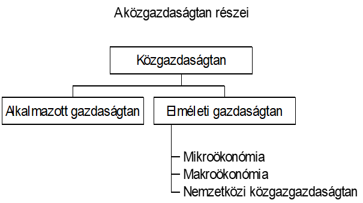

A közgazdaságtan a döntések és választások tudománya a korlátozott lehetőségek világában, azokat a bonyolult folyamatokat vizsgálja, amelyek során a társadalom szűkös erőforrásait felhasználja a szükségletek kielégítésére, és a megtermelt javakat elosztja a társadalom tagjai között.

Elméleti gazdaságtan
Az elméleti gazdaságtan a gazdaság működésének általános törvényeit és mozgatórugóit kutatja.
Mikroökonómia
A mikroökonómia az egymástól elkülönült piaci szereplőket (fogyasztók, háztartások, vállalatok) illetve azok döntéseit, általánosítható viselkedési jellemzőit, döntési alternatíváit, gazdasági reakcióit vizsgálja.